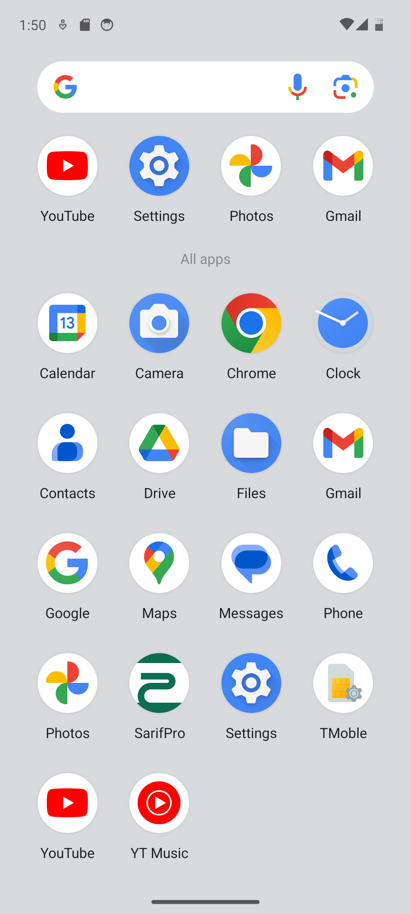

Download
Tap the download button and save the SarifPro APK on the Android phone.
Android only
Mobile money exchange automation for SMS processing, 898 balance monitoring, USSD transfers, and device-bound subscriptions.

Install
Tap the download button and save the SarifPro APK on the Android phone.
If Android asks, allow installs from the browser or file manager used to open the APK.
Open SarifPro, grant SMS and phone permissions, then enable the SarifPro Accessibility Service.
Privacy
Your transactions and customer data stay on your device and are never uploaded. Supabase is used only for authentication, subscription checks, payment verification, device binding, and basic app metadata.